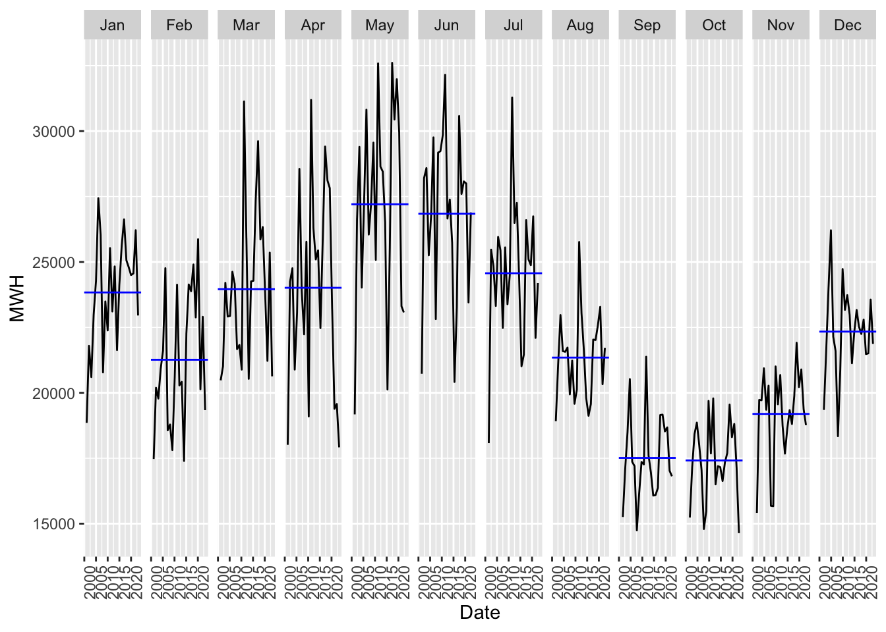
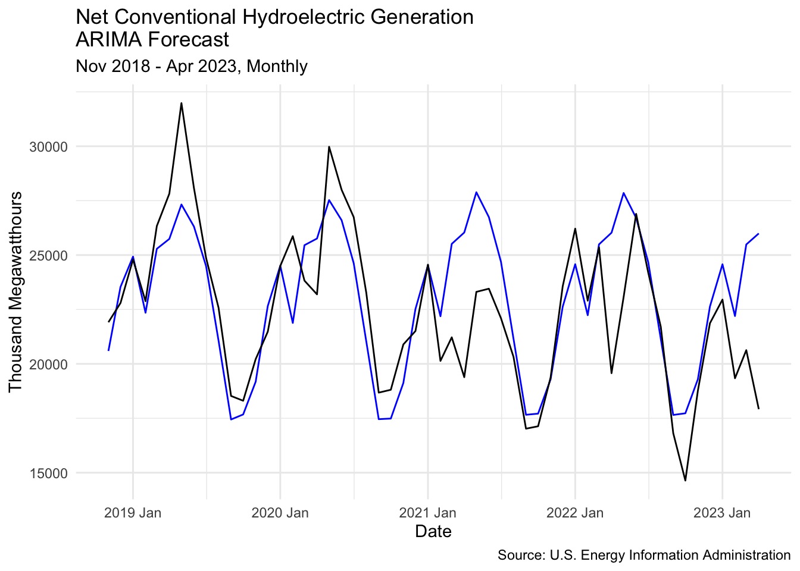

In the efforts of reaching net zero emissions, renewable energy sources get more and more important. One of the cheapest and most sustainable sources of electricity is conventional hydroelectric power generation.
Even though, the US has been using conventional hydropower since 1950s, the industry is far from reaching its full potential. With thousands of yet to be used dams and an increasing pressure to switch to the renewable energy, the demand and investments are going to rise significantly. Meanwhile, high seasonality and annual variation of the hydropower output can produce more accurate forecasting models. Here Seasonal Naïve, Regression, ETS, ARIMA, and ARIMA with external regressors are tested using RMSE and MPE to see which model better predicts unseen data. Using the net monthly conventional hydropower generation dataset, I identified ARIMA as the best one for the role.
Technical Note: A megawatt is a unit for measuring instantaneous power equivalent to one million watts or thousand kilowatts. A megawatt hour (MWh) is equal to 1,000 kilowatt hours (kWh). It is equal to 1,000 kilowatts of energy consumed or produced in one hour. It is a bit more than the amount of electricity used by an average US residential utility customer in one month (886 kWh), according to the EIA.
I import the data on net energy generation of electricity from the conventional hydroelectric sources from the EIA website. The units are measured in thousand megawatt hours. The timeframe is from January 2001 through April 2023.
Rows: 268 Columns: 2
── Column specification ────────────────────────────────────────────────────────
Delimiter: ","
chr (1): Month
dbl (1): conventional hydroelectric thousand megawatthours
ℹ Use `spec()` to retrieve the full column specification for this data.
ℹ Specify the column types or set `show_col_types = FALSE` to quiet this message.
Here is a preview of the dataset:
Code
head(net_gen)
# A tibble: 6 × 2
Month `conventional hydroelectric thousand megawatthours`
<chr> <dbl>
1 Apr 2023 17917.
2 Mar 2023 20630.
3 Feb 2023 19338.
4 Jan 2023 22954.
5 Dec 2022 21870.
6 Nov 2022 18764.
Code
library(summarytools)
Attaching package: 'summarytools'
The following object is masked from 'package:tibble':
view
I am changing the name of the variable to MWH for brevity.
Code
# rename the variable to MWHnet_gen = net_gen %>%rename(MWH ="conventional hydroelectric thousand megawatthours")
Descriptive Statistics
net_gen$MWH
N: 268
Mean Std.Dev Median Min Max
--------- ---------- --------- ---------- ---------- ----------
MWH 22469.85 3972.41 22187.54 14638.18 32607.12
I reorder the rows, so that the last observation (earliest date) is now the first one.
Code
net_gen=net_gen[order(nrow(net_gen):1),]
Code
#changing to yearmonth format, naming Date, and indexingnet_gen = net_gen %>%mutate(Date =yearmonth(Month)) |>as_tsibble(index = Date)
Code
net_gen %>%autoplot(MWH) +labs(title ="Net Conventional Hydroelectric Power Generation",subtitle ="Jan 2001 - Apr 2023, Monthly",y ="Thousand Megawatthours",x ="Date",caption ="Source: U.S. Energy Information Administration") +theme_minimal()
Here we can observe a general plot of the Hydropower time series. There seems to be no significant trend and high seasonality.
Code
net_gen |>gg_season(MWH, labels ="both")
As we can see here, there are spikes in the same months across all years, indicating high seasonality.
Code
net_gen |>gg_subseries(MWH)

This plot, where the blue line is the average across the same months, shows that on average there is a spike in the late spring to early summer. The trough is in fall.
In this plot we can see the average and the trend by month across different years. This plot shows the same spikes and troughs, but we can also observe that the months with the highest values have a downward trend. This means that even though the energy output in those months is still the highest, it diminishes.
Here we see the STL decomposition components: trend, seasonality, and the remainder. There is high seasonality and some downward trend at the end of the series. The gray bars on the left show us that seasonality is very significant, whereas the general trend is less so.
Code
net_gen |>ACF(MWH) |>autoplot()
The plot of Autocorrelation Figure also indicates high seasonality, since the the values 12 months apart have the highest correlation.
I estimate Naive, Seasonal Naive, Drift, and two ETS models. There are two ETS models because the optimal ETS() (the default one) seems to be underperforming, since it chooses no trend. I add ETS(A,Ad,M) since it seems to increase forecast accuracy.
A mable: 1 x 5 Naive Season_Naive Drift ETSopt ETS 1 <ETS(M,N,A)> <ETS(A,Ad,M)>
Creating Training and Testing sets.
Code
#creating the var with the number of ~80% and ~20% of the observations and then splitting them accordingly.round(268*0.8)
[1] 214
Code
total_obs.net_gen =dim(net_gen)[1] #puts n of obs into total_obstrain_obs = total_obs.net_gen *0.8test_obs = total_obs.net_gen - train_obsnet_gen.train2 =head(net_gen, train_obs)net_gen.test2 =tail(net_gen, test_obs)
#initial ARIMA estimationnet_gen.train2 |>model(auto =ARIMA(MWH,stepwise =FALSE, #gives ARIMA more time to calculateapprox =FALSE)) -> arima.fit
Warning in sqrt(diag(best$var.coef)): NaNs produced
When estimating ARIMA models, it is important to check if the residuals look like white noise and have no patterns.
Code
arima.fit |>gg_tsresiduals(lag_max=36)
The graphic of the residuals shows that residuals look pretty random, but there is a spike in acf that is statistically significant (crossed the blue line). I have to perform Ljung-Box test.
Code
arima.fit
# A mable: 1 x 1
auto
<model>
1 <ARIMA(2,0,0)(2,1,1)[12]>
A mable: 1 x 1 auto 1 <ARIMA(2,0,0)(2,1,1)[12]>
Code
#Ljung-Box testaugment(arima.fit) |>features(.innov, ljung_box, lag =36, dof =5)
# A tibble: 1 × 3
.model lb_stat lb_pvalue
<chr> <dbl> <dbl>
1 auto 28.9 0.575
Code
#dof=p+q+P+Q from ARIMA(p,d,q)(P,D,Q)
The p-value is very large, which is exactly what we need to proceed and not care about autocorrelation in the residuals.
net_gen.fc2.arima |>autoplot(net_gen.train2) +guides(colour =guide_legend(title ="Forecast")) +labs(title ="Net Conventional Hydroelectric GenerationARIMA Forecast",subtitle ="Jan 2001 - Apr 2023, Monthly",y ="Thousand Megawatthours",x ="Date",caption ="Source: U.S. Energy Information Administration") +theme_minimal()
Code
net_gen.fc2.arima |>#filter(.model = "") |>autoplot(net_gen.test2) +guides(colour =guide_legend(title ="Forecast")) +labs(title ="Net Conventional Hydroelectric GenerationARIMA Forecast",subtitle ="Jan 2001 - Apr 2023, Monthly",y ="Thousand Megawatthours",x ="Date",caption ="Source: U.S. Energy Information Administration") +theme_minimal()
Code
#theme(plot.caption = element_text(hjust = 5))
Code
net_gen.fc2.arima |>autoplot(net_gen.test2, level =NULL) +guides(colour =guide_legend(title ="Forecast")) +labs(title ="Net Conventional Hydroelectric GenerationARIMA Forecast",subtitle ="Nov 2018 - Apr 2023, Monthly",y ="Thousand Megawatthours",x ="Date",caption ="Source: U.S. Energy Information Administration") +theme_minimal()

In these plots we can closely observe the ARIMA forecast is quite close, and even though some predicted observations are off, almost all actual values are within the 95% prediction interval.
ARIMA with external Regressors
I import the meteorological data on droughts in the US. I used the Monthly Historical Drought Data, because I assume that the general amount of water affects the aggregate power generated in that month. According to the National Integrated Drought Information System, “SPI captures how observed precipitation (rain, hail, snow) deviates from the climatological average over a given time period—in this case, over the 9 months leading up to the selected date.”
Code
SPI <-read_csv("SPI.csv")
Rows: 1542 Columns: 13
── Column specification ────────────────────────────────────────────────────────
Delimiter: ","
chr (1): DATE
dbl (12): 0, D0, D1, D2, D3, D4, -9, W0, W1, W2, W3, W4
ℹ Use `spec()` to retrieve the full column specification for this data.
ℹ Specify the column types or set `show_col_types = FALSE` to quiet this message.
I prepare the meteorological dataset and combine it with the Hydropower one.
Code
#finding the start datewhich(SPI$DATE=="d_20010101")
[1] 1273
Code
#matching the timeframe with that of Hydropower datasetspi = SPI[1273:nrow(SPI), c(-1)]spi = spi[1:268,]
Code
net_gen = net_gen %>%bind_cols(spi)
Here is a preview of the resulting data:
Code
head(net_gen)
# A tsibble: 6 x 15 [1M]
Month MWH Date DATE D0 D1 D2 D3 D4 `-9` W0 W1
<chr> <dbl> <mth> <chr> <dbl> <dbl> <dbl> <dbl> <dbl> <dbl> <dbl> <dbl>
1 Jan 2001 18852. 2001 Jan d_20… 40.8 28.2 12.7 7.3 2.8 0 18.4 11.3
2 Feb 2001 17473. 2001 Feb d_20… 37.3 27.1 13.9 8.5 4.5 0 23.9 14.5
3 Mar 2001 20477. 2001 Mar d_20… 37.6 25.9 11.8 7 3.8 0 17.5 8.6
4 Apr 2001 18013. 2001 Apr d_20… 37.5 26.8 13 7.3 3.1 0 22.8 13.6
5 May 2001 19176. 2001 May d_20… 36.4 27.6 14.4 8.2 3.4 0 29.7 20.6
6 Jun 2001 20728. 2001 Jun d_20… 36.8 29.5 16.4 9.3 3.3 0 36.2 25.1
# … with 3 more variables: W2 <dbl>, W3 <dbl>, W4 <dbl>
I again split my data in two parts: training and testing sets.
Code
# Second Split of the datatotal_obs.net_gen =dim(net_gen)[1] #puts n of obs into total_obstrain_obs = total_obs.net_gen *0.8test_obs = total_obs.net_gen - train_obsnet_gen.train2 =head(net_gen, train_obs)net_gen.test2 =tail(net_gen, test_obs)
Here we can see the percentage of the US territory that had experienced exceptional drought (D4).
Code
net_gen |>autoplot(D4)
I combine this plot with the hydropower time series, to see if there is any visual relationship.
As we can see from the evaluation metrics, the ARIMA with external regressors is the best performing model, in terms of both variance (RMSE) and bias (MPE).
Source Code
---title: "Forecasting Conventional Hydroelectric Power Generation in the US"execute: freeze: autoformat: html: code-fold: show code-tools: true---```{r setup, include=FALSE}knitr::opts_chunk$set(echo =TRUE)```## AbstractIn the efforts of reaching net zero emissions, renewable energy sources get more and more important. One of the cheapest and most sustainable sources of electricity is conventional hydroelectric power generation.Even though, the US has been using conventional hydropower since 1950s, the industry is far from reaching its full potential. With thousands of yet to be used dams and an increasing pressure to switch to the renewable energy, the demand and investments are going to rise significantly. Meanwhile, high seasonality and annual variation of the hydropower output can produce more accurate forecasting models. Here Seasonal Naïve, Regression, ETS, ARIMA, and ARIMA with external regressors are tested using RMSE and MPE to see which model better predicts unseen data. Using the net monthly conventional hydropower generation dataset, I identified ARIMA as the best one for the role.**Technical Note**:A megawatt is a unit for measuring instantaneous power equivalent to one million watts or thousand kilowatts. A megawatt hour (MWh) is equal to 1,000 kilowatt hours (kWh). It is equal to 1,000 kilowatts of energy consumed or produced in one hour. It is a bit more than the amount of electricity used by an average US residential utility customer in one month (886 kWh), according to the EIA.```{r}library(fpp3)```## Data Preparation and AnalysisI import the data on net energy generation of electricity from the conventional hydroelectric sources from the [EIA website](https://www.eia.gov/electricity/data/browser/#/topic/0?agg=2,0,1&fuel=05&geo=vvvvvvvvvvvvo&sec=g&linechart=elec.gen.hyc-us-99.m&columnchart=elec.gen.hyc-us-99.m&map=elec.gen.hyc-us-99.m&freq=m&ctype=linechart<ype=pin&rtype=s&maptype=0&rse=0&pin=). The units are measured in thousand megawatt hours. The timeframe is from January 2001 through April 2023.```{r}library(readr)net_gen <-read_csv("Net_generation_United_States_all_sectors_monthly.csv", skip =4)```Here is a preview of the dataset:```{r}head(net_gen)``````{r}library(summarytools)```I am changing the name of the variable to MWH for brevity.```{r rename var to MWH}# rename the variable to MWHnet_gen = net_gen %>%rename(MWH ="conventional hydroelectric thousand megawatthours")```Here is a table of some descriptive statistics:```{r}descr(net_gen,stats =c("mean", "sd","med", "min", "max"), transpose =TRUE)```I reorder the rows, so that the last observation (earliest date) is now the first one.```{r reorder the rows}net_gen=net_gen[order(nrow(net_gen):1),]``````{r change to yearmonth and index}#changing to yearmonth format, naming Date, and indexingnet_gen = net_gen %>%mutate(Date =yearmonth(Month)) |>as_tsibble(index = Date)``````{r plotting net_gen}net_gen %>%autoplot(MWH) +labs(title ="Net Conventional Hydroelectric Power Generation",subtitle ="Jan 2001 - Apr 2023, Monthly",y ="Thousand Megawatthours",x ="Date",caption ="Source: U.S. Energy Information Administration") +theme_minimal()```Here we can observe a general plot of the Hydropower time series. There seems to be no significant trend and high seasonality.```{r seasonal plot}net_gen |>gg_season(MWH, labels ="both")```As we can see here, there are spikes in the same months across all years, indicating high seasonality.```{r}net_gen |>gg_subseries(MWH)```This plot, where the blue line is the average across the same months, shows that on average there is a spike in the late spring to early summer. The trough is in fall.```{r}net_gen |>model(stl =STL(MWH)) |>components() |>gg_subseries(season_year) +theme(axis.text.x =element_text(size =5))```In this plot we can see the average and the trend by month across different years. This plot shows the same spikes and troughs, but we can also observe that the months with the highest values have a downward trend. This means that even though the energy output in those months is still the highest, it diminishes.```{r}net_gen |>model(stl =STL(MWH)) |>components() |>autoplot()```Here we see the STL decomposition components: trend, seasonality, and the remainder. There is high seasonality and some downward trend at the end of the series. The gray bars on the left show us that seasonality is very significant, whereas the general trend is less so.```{r}net_gen |>ACF(MWH) |>autoplot()```The plot of Autocorrelation Figure also indicates high seasonality, since the the values 12 months apart have the highest correlation.I estimate Naive, Seasonal Naive, Drift, and two ETS models. There are two ETS models because the optimal ETS() (the default one) seems to be underperforming, since it chooses no trend. I add ETS(A,Ad,M) since it seems to increase forecast accuracy. A mable: 1 x 5 Naive Season_Naive Drift ETSopt ETS<model><model><model><model><model>1 <NAIVE><SNAIVE><RWw/drift> <ETS(M,N,A)> <ETS(A,Ad,M)>## Creating Training and Testing sets.```{r 80/20 split}#creating the var with the number of ~80% and ~20% of the observations and then splitting them accordingly.round(268*0.8)total_obs.net_gen =dim(net_gen)[1] #puts n of obs into total_obstrain_obs = total_obs.net_gen *0.8test_obs = total_obs.net_gen - train_obsnet_gen.train2 =head(net_gen, train_obs)net_gen.test2 =tail(net_gen, test_obs)```## ARIMA Estimation```{r}net_gen |>gg_tsdisplay(MWH,plot_type='partial', lag_max =24)``````{r}net_gen |>gg_tsdisplay(difference(MWH, 12),plot_type='partial', lag_max =24)``````{r}net_gen |>gg_tsdisplay(difference(MWH, 12) |>difference(),plot_type='partial', lag_max =24)``````{r initial ARIMA estimation}#initial ARIMA estimationnet_gen.train2 |>model(auto =ARIMA(MWH,stepwise =FALSE, #gives ARIMA more time to calculateapprox =FALSE)) -> arima.fit```When estimating ARIMA models, it is important to check if the residuals look like white noise and have no patterns.```{r ARIMA residuals}arima.fit |>gg_tsresiduals(lag_max=36)```The graphic of the residuals shows that residuals look pretty random, but there is a spike in acf that is statistically significant (crossed the blue line). I have to perform Ljung-Box test.```{r}arima.fit```A mable: 1 x 1 auto<model>1 <ARIMA(2,0,0)(2,1,1)[12]>```{r}#Ljung-Box testaugment(arima.fit) |>features(.innov, ljung_box, lag =36, dof =5)#dof=p+q+P+Q from ARIMA(p,d,q)(P,D,Q)```The p-value is very large, which is exactly what we need to proceed and not care about autocorrelation in the residuals.## Seasonal Naive, TS Regression, and ETS```{r Other models Estimation}net_gen.fit2 = net_gen.train2 |>model(Season_Naive =SNAIVE(MWH),Regression =TSLM(MWH ~trend() +season()),ETSopt =ETS(MWH), #automaticETS =ETS(MWH ~error("A")+trend("Ad")+season("M")) #industry standard )``````{r}net_gen.fit2```A mable: 1 x 4 Season_Naive Regression ETSopt ETS<model><model><model><model>1 <SNAIVE><TSLM> <ETS(M,Ad,M)> <ETS(A,Ad,M)>```{r}accuracy(net_gen.fit2) |>select(.model, RMSE, MAE)``````{r}accuracy(arima.fit) |>select(.model, RMSE, MAE)```We can see how closely the corresponding models predict the data within the Training set.Now using these models I predict the next 54 months and compare the predictions to the withheld observations.```{r forecast generation}#generating forecastnet_gen.fc2 = net_gen.fit2 |>forecast(h =54)net_gen.fc2.arima = arima.fit |>forecast(h =54)``````{r}net_gen.fc2 |>autoplot(net_gen.train2, level =NULL) +guides(colour =guide_legend(title ="Forecast")) +labs(title ="Net Conventional Hydroelectric Generation Forecast",subtitle ="Jan 2001 - Apr 2023, Monthly",y ="Thousand Megawatthours",x ="Date",caption ="Source: U.S. Energy Information Administration") +theme_minimal() +theme(plot.caption =element_text(hjust =6.5))``````{r}net_gen.fc2 |>#filter(.model = "") |>autoplot(net_gen.test2, level =NULL) +guides(colour =guide_legend(title ="Forecast")) +labs(title ="Net Conventional Hydroelectric Generation Forecast",subtitle ="Jan 2001 - Apr 2023, Monthly",y ="Thousand Megawatthours",x ="Date",caption ="Source: U.S. Energy Information Administration") +theme_minimal()#theme(plot.caption = element_text(hjust = 5))``````{r}net_gen.fc2.arima |>autoplot(net_gen.train2) +guides(colour =guide_legend(title ="Forecast")) +labs(title ="Net Conventional Hydroelectric GenerationARIMA Forecast",subtitle ="Jan 2001 - Apr 2023, Monthly",y ="Thousand Megawatthours",x ="Date",caption ="Source: U.S. Energy Information Administration") +theme_minimal()``````{r}net_gen.fc2.arima |>#filter(.model = "") |>autoplot(net_gen.test2) +guides(colour =guide_legend(title ="Forecast")) +labs(title ="Net Conventional Hydroelectric GenerationARIMA Forecast",subtitle ="Jan 2001 - Apr 2023, Monthly",y ="Thousand Megawatthours",x ="Date",caption ="Source: U.S. Energy Information Administration") +theme_minimal()#theme(plot.caption = element_text(hjust = 5))``````{r}net_gen.fc2.arima |>autoplot(net_gen.test2, level =NULL) +guides(colour =guide_legend(title ="Forecast")) +labs(title ="Net Conventional Hydroelectric GenerationARIMA Forecast",subtitle ="Nov 2018 - Apr 2023, Monthly",y ="Thousand Megawatthours",x ="Date",caption ="Source: U.S. Energy Information Administration") +theme_minimal()```In these plots we can closely observe the ARIMA forecast is quite close, and even though some predicted observations are off, almost all actual values are within the 95% prediction interval.## ARIMA with external RegressorsI import the meteorological data on droughts in the US. I used the [Monthly Historical Drought Data](https://www.drought.gov/data-maps-tools/historical-drought-data-conditions-tool), because I assume that the general amount of water affects the aggregate power generated in that month. According to the [National Integrated Drought Information System](https://www.drought.gov/historical-information?dataset=1&selectedDateUSDM=20101221&selectedDateSpi=19580601), "SPI captures how observed precipitation (rain, hail, snow) deviates from the climatological average over a given time period—in this case, over the 9 months leading up to the selected date."```{r}SPI <-read_csv("SPI.csv")```I prepare the meteorological dataset and combine it with the Hydropower one.```{r}#finding the start datewhich(SPI$DATE=="d_20010101")``````{r}#matching the timeframe with that of Hydropower datasetspi = SPI[1273:nrow(SPI), c(-1)]spi = spi[1:268,]``````{r}net_gen = net_gen %>%bind_cols(spi)```Here is a preview of the resulting data:```{r}head(net_gen)```I again split my data in two parts: training and testing sets.```{r Second Split}# Second Split of the datatotal_obs.net_gen =dim(net_gen)[1] #puts n of obs into total_obstrain_obs = total_obs.net_gen *0.8test_obs = total_obs.net_gen - train_obsnet_gen.train2 =head(net_gen, train_obs)net_gen.test2 =tail(net_gen, test_obs)```Here we can see the percentage of the US territory that had experienced exceptional drought (D4).```{r}net_gen |>autoplot(D4)```I combine this plot with the hydropower time series, to see if there is any visual relationship.```{r}net_gen |>pivot_longer(c(MWH, D4)) |>ggplot(aes(x = Date, y = value)) +geom_line() +facet_grid(name ~ ., scales ="free_y") +ylab("")```It is hard to tell if there is any strong relationship between the two.```{r}net_gen |>pivot_longer(c(MWH, W4)) |>ggplot(aes(x = Date, y = value)) +geom_line() +facet_grid(name ~ ., scales ="free_y") +ylab("")```The same lack of obvious relationship can be said about the exceptionally wet %.I look at the correlation between these variables.```{r}library(GGally)``````{r}net_gen |> GGally::ggpairs(columns =c("MWH","D4","W4"))```Again, no strong relationship, althought correlation with W4 is statistically significant.I include all the independent variables in the regression, as well as the seasonality variable.```{r}net_gen.fit3 = net_gen.train2 |>model(ARIMA.reg =ARIMA(MWH ~ D0+D1+D2+D3+D4+W0+W1+W2+W3+W4+season()))``````{r}net_gen.fit3 |>gg_tsresiduals()```We can clearly see here that the residuals look random, which is good.I then create the future observations for the independent meteorological observations, by averaging the past values.```{r}net_gen_future <-new_data(net_gen.train2, 54) |>mutate(D0 =mean(net_gen$D0),D1 =mean(net_gen$D1),D2 =mean(net_gen$D2),D3 =mean(net_gen$D3),D4 =mean(net_gen$D4),W0 =mean(net_gen$W0),W1 =mean(net_gen$W1),W2 =mean(net_gen$W2),W3 =mean(net_gen$W3),W4 =mean(net_gen$W4))``````{r}#forecasting using the newly created observationsnet_gen.fc3 = net_gen.fit3 |>forecast(new_data = net_gen_future)``````{r}net_gen.fc3 |>autoplot(net_gen.train2) +guides(colour =guide_legend(title ="Forecast")) +labs(title ="Net Conventional Hydroelectric Generation ForecastARIMA with Regressors Forecast",subtitle ="Jan 2001 - Apr 2023, Monthly",y ="Thousand Megawatthours",x ="Date",caption ="Source: U.S. Energy Information Administration") +theme_minimal()``````{r}net_gen.fc3 |>autoplot(net_gen.test2) +guides(colour =guide_legend(title ="Forecast")) +labs(title ="Net Conventional Hydroelectric GenerationARIMA with Regressors Forecast",subtitle ="Nov 2018 - Apr 2023, Monthly",y ="Thousand Megawatthours",x ="Date",caption ="Source: U.S. Energy Information Administration") +theme_minimal()```## Accuracy Evaluation```{r}net_gen.fc3 |>accuracy(net_gen) |>select(.model, RMSE, ME, MPE)``````{r}net_gen.fc2 |>accuracy(net_gen) |>select(.model, RMSE, ME, MPE)``````{r}net_gen.fc2.arima |>accuracy(net_gen) |>select(.model, RMSE, ME, MPE)``````{r creating accuracy metrics df}net_gen.fc2 |>accuracy(net_gen) |>select(.model, RMSE, ME, MPE) |>as.data.frame() -> acc.metricnet_gen.fc2.arima |>accuracy(net_gen) |>select(.model, RMSE, ME, MPE) |>as.data.frame() |>bind_rows(acc.metric) -> acc.metricnet_gen.fc3 |>accuracy(net_gen) |>select(.model, RMSE, ME, MPE) |>as.data.frame() |>bind_rows(acc.metric) -> acc.metricacc.metric[2,1] ="ARIMA"``````{r RMSE plot}acc.metric %>%group_by(.model, RMSE) %>%ggplot(aes(x = RMSE, xend =2300, y =reorder(.model, desc(RMSE)), yend=.model,label=round(RMSE, 0))) +theme_minimal() +geom_segment() +geom_point() +geom_text(nudge_x =-40, nudge_y =0.2,size =3) +theme(axis.ticks.y =element_blank(),axis.text.y =element_blank()) +labs(x ="RMSE", y =element_blank()) -> rmse.plotrmse.plot``````{r MPE plot}acc.metric %>%group_by(.model, MPE) %>%ggplot(aes(x = MPE, xend =0, y =reorder(.model, desc(abs(MPE))), yend=.model,label=round(MPE, 2))) +theme_minimal() +geom_segment() +geom_point() +geom_text(nudge_x =0.5, nudge_y =0.2,size =3) +labs(y ="", x ="MPE") -> mpe.plotmpe.plot``````{r ggpubr for ggarrange}library(ggpubr)``````{r}ggarrange(mpe.plot, rmse.plot,ncol =2, nrow =1) |>annotate_figure(top =text_grob("Forecast Accuracy Metrics"))```## Conclusion```{r}acc.metric |>arrange(RMSE, MPE)```As we can see from the evaluation metrics, the ARIMA with external regressors is the best performing model, in terms of both variance (RMSE) and bias (MPE).